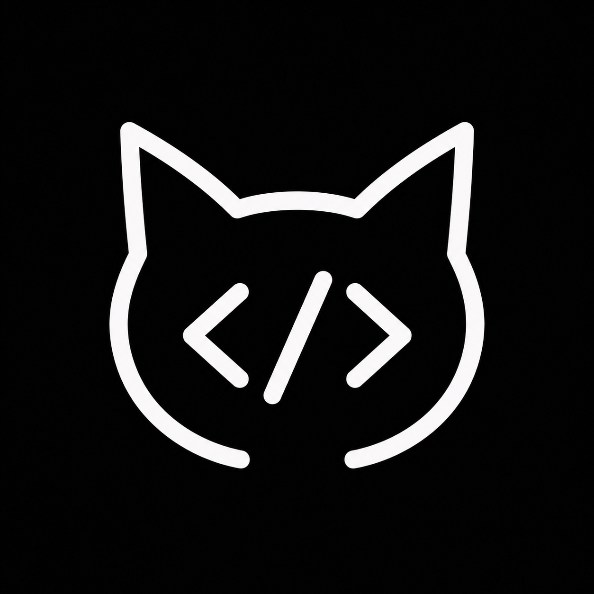

LOCAL-FIRST · VISUAL HTML WORKSPACE
把 HTML 放到画布上，
直接完成设计。
无需上传项目，也不绑定框架。打开单个 HTML 文件，在真实页面上修改文字、结构和样式，再保存回本地。
也可以把 .html 文件拖到这个页面

HTML DesignerLOCAL-FIRST · VISUAL HTML WORKSPACE
无需上传项目，也不绑定框架。打开单个 HTML 文件，在真实页面上修改文字、结构和样式，再保存回本地。
也可以把 .html 文件拖到这个页面